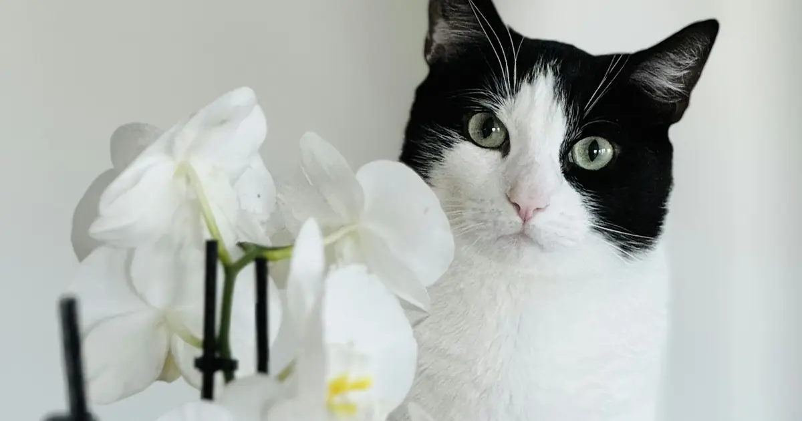

If your cat has had any contact with a true lily or daylily, treat it as an emergency. Call your veterinarian or an animal poison control center and head to a clinic now. Bring the plant or a photo of it.

Enter weight and amount to get an urgency level and next steps.
What to do right now
- Move your cat away from the source and pick up anything left over.
- Find the packaging, label, or plant so you know exactly what was eaten and how much.
- Note your cat's weight and the time it happened.
- Call your veterinarian or an animal poison control center. Do this even if your pet seems normal.
- Do not make your pet vomit unless a professional tells you to.
- Follow the advice you are given, and bring the packaging to the clinic.
Why lilies are dangerous for cats
The toxin in true lilies (genus Lilium) and daylilies (genus Hemerocallis) has not been identified, but it damages the cells that line the kidneys. It affects cats; dogs that eat lilies usually only get a mild stomach upset.
Highly toxic lilies include Easter, tiger, Asiatic, Stargazer, Oriental, rubrum, Japanese show, and wood lilies, plus daylilies. Lily of the valley is not a true lily but contains heart toxins and is also an emergency. Peace lilies and calla lilies are not true lilies; they irritate the mouth but do not cause kidney failure.
Symptoms to watch for
- Vomiting and drooling
- Loss of appetite
- Low energy and hiding
- Increased urination and thirst, then little or no urine
- Dehydration
- Weakness and collapse
Timeline: when signs appear
Early signs such as vomiting, drooling, and low energy usually begin within 0 to 12 hours. Kidney damage starts around 12 to 24 hours, and kidney failure can follow within 24 to 72 hours. If treatment is delayed beyond about 18 hours, cats often develop kidney failure that cannot be reversed.
Go straight to an emergency vet if
- Your cat chewed, ate, or licked any part of a true lily or daylily, or drank vase water
- You do not know what type of lily it was
- Your cat is vomiting, drooling, hiding, or not eating after being near lilies
- Poison control or your vet has told you to come in
What the vet will do
The vet will try to remove any plant material by inducing vomiting, give activated charcoal, and start IV fluids, usually for at least 48 hours, to protect the kidneys.
Kidney values are checked with bloodwork over several days. Cats treated early, before kidney damage sets in, usually do well.
How to prevent it
- Do not bring true lilies or daylilies into a home with cats, including in bouquets.
- Ask florists to leave lilies out of arrangements sent to cat owners.
- Remove daylilies from gardens your cat can reach.
- Wipe any pollen from your cat's fur with a damp cloth and call the vet.
For a room-by-room list you can print, see the pet poison-proofing checklist.
Enter weight and amount to get an urgency level and next steps.
Frequently asked questions
Is lily pollen dangerous to cats?
Yes. Licking a few grains of pollen off their fur while grooming can cause kidney failure.
Are peace lilies toxic to cats?
Peace lilies are not true lilies. They can cause drooling, mouth pain, and vomiting, but not the kidney failure caused by true lilies. Call your vet to confirm.
Can dogs get sick from lilies?
Dogs that eat true lilies usually only get a mild stomach upset. Lily of the valley is dangerous to both dogs and cats.
My cat seems fine after chewing a lily. Can I wait?
No. Treatment works best before signs appear. Waiting more than about 18 hours greatly raises the risk of permanent kidney damage.